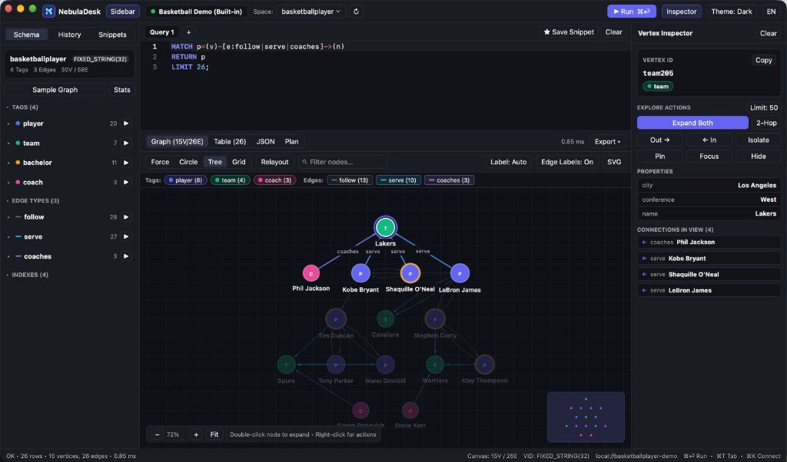

NebulaDesk
The native desktop client for NebulaGraph v3
Lightweight and GPU-accelerated, written in pure Go.
Zero Electron, zero WebView — a single ~15 MB binary that starts
instantly and idles at 0% CPU.

Why NebulaDesk
A graph workbench that feels instant
True native, ultra-light
No Electron, no Chromium, no JS runtime. Rendered on the GPU — Metal on macOS, Direct3D 11 on Windows, OpenGL on Linux.
Zero-friction demo
Ships with an in-memory NebulaGraph simulator preloaded with basketballplayer & tech_ecosystem spaces — try everything offline.
Built for big graphs
Strictly LIMIT-bounded expansion, O(N) spatial-hash force layout with an 18 ms frame budget, edge culling and dense-graph LOD.
Bilingual UI
One-click English / 中文 switching in the toolbar, persisted across sessions. Comfortable for global teams.
Features
Everything between query and insight
nGQL Code Editor
Zed-style GPU editor with nGQL syntax highlighting, schema-aware autocompletion, hover docs, diagnostics and multi-tab workspaces. ⌘⏎ to run.
AI nGQL Assistant ⌘J
Explores your live space in read-only mode — samples real vertices, validates candidate queries — then returns verified, visualization-ready nGQL with one-click Load & Run. Works with any OpenAI-compatible endpoint: OpenAI, DeepSeek, Qwen, Ollama, OpenRouter.
Interactive Graph Canvas
GPU-drawn 2D canvas with Force, Circular, Tree and Grid layouts, curved Bézier parallel edges, self-loops, neighborhood spotlight, minimap, LOD and SVG / JSON export.
Double-click Exploration
Double-click any node to expand its neighborhood with directional, LIMIT-bounded MATCH queries — merged smoothly into the live canvas, even on super-nodes.
Multi-view Results
Flip between Graph, sortable Table with cell magnifier, formatted JSON and EXPLAIN / PROFILE plans. Export to CSV or JSON in one click.
Schema, History & Snippets
Auto-refreshed space switcher, expandable schema tree with index indicators, searchable history and persistent favorite snippets.
Connection Manager
Save multiple NebulaGraph v3 cluster profiles — multi-host seeds, TLS, per-connection default space — next to the built-in demo engine.
“Instant startup, ~15 MB binary, 0% idle CPU — a graph client that behaves like a native app, because it is one.”
Download
Get NebulaDesk v0.2.0
Pre-built binaries and installers on GitHub Releases.
macOS
Apple Silicon & Intel · .dmg
Windows
x64 · .zip / installer
Linux
x64 & ARM64 · .tar.gz
xattr -cr /Applications/NebulaDesk.app — or allow it via
System Settings → Privacy & Security → Open Anyway.
On Windows SmartScreen, choose More info → Run anyway.
CGO_ENABLED=0 go build -ldflags="-s -w" -o nebuladesk .